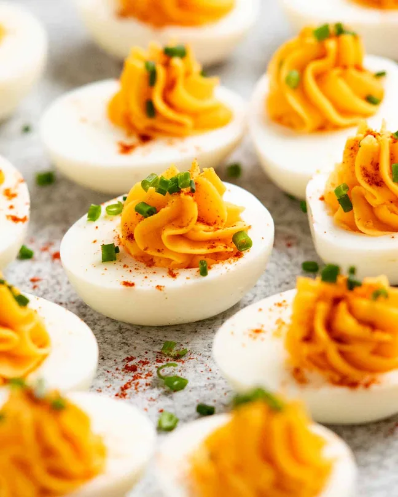

Deviled Eggs
Home
Description

Arguably everybody's favourite egg recipe! Easy, affordable party food
that's excellent for making ahead.
Ingredients
Deviled Eggs Filling
- 2 tsp Dijon mustard
- 2 tsp Tabasco or other hot sauce
- 1 tsp white wine vinegar
- tsp mayonnaise , whole egg mayo preferred, or kewpie
- 1/4 heaped teaspoon cooking salt / kosher salt
- 50 g/ 3 tbsp cold unsalted butter , cut into 1 cm / 0.2″ cubes
Garnish
- Paprika, regular, sweet, or smoked
- 1 tbsp chives, finely chopped
Steps
Hard boil eggs with centred yolks:
-
Large pot — Bring a large pot with 15cm/6 water
to the boil. Lower eggs in gently using a spider or slotted spoon. Lower
heat a tiny bit if needed to stop the eggs from jostling around so much
they crack.
-
Boild and swirl — Boil eggs for 10 minutes. Swirl
the water every minute for the first 6 minutes, using the handle of a
wooden spoon. Give the water 4 or 4 fast stirs in one direction to make
the water and eggs swirl in the water. The centrifugal force will make
the yolks cook centred in the egg white (i.e. no thin broken egg white
walls)
-
Peel — Fill a sink with cold tap water. Remove
eggs from the boiling water using a slotted spoon or spider. Leave for 5
minutes until cool enough to handle. Tap the base then peel underwater.
Fill devilled eggs:
-
Remove yolks — Cut the eggs in half and remove
the yolks using a teaspoon.
-
Filling — Place the yolks and all filling
ingredients except butter in a small food processor. Blits
until yolks are broken up. Add butter and blits, scraping down the sides
as needed, until the butter is blended through. The filling should be
creamy (smear with back of spoon to check).
-
Choose the best 18 to 20 egg white halves. Brush yolk
crumbs off the cut surface.
-
Pipe — Transfer filling into a piping bag fitted
with a nozzle of your choice. Fill so it's mounded.
- Sprinkle with paprika and chives, then serve.